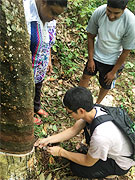
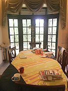
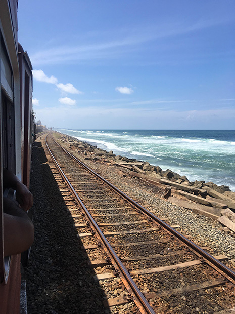

 低開発村の天然ゴム |
「仕事をしている故、長期休暇がとれませんが、短期間でもホームステイ体験、英会話、その他体験ができるので、この留学を決めました。 英語の先生が、自分のスキルを素早く把握し、レベルに合ったレッスンを提供してくれました。 ホームステイは、不満に思う点は一切ありませんでした。 |
現地の方は、日本のカレーのルーには、ハチミツが入っているのと甘いという点で好んでいませんでした。 スリランカに行く前は、インフラ整備が不十分なイメージでした。 |
 ここでレッスン☆ |
 海沿いを列車で観光♪ |
スリランカで携帯電話を使う場合、SIMカードがとても便利なので、オススメです。 |